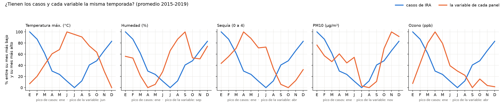
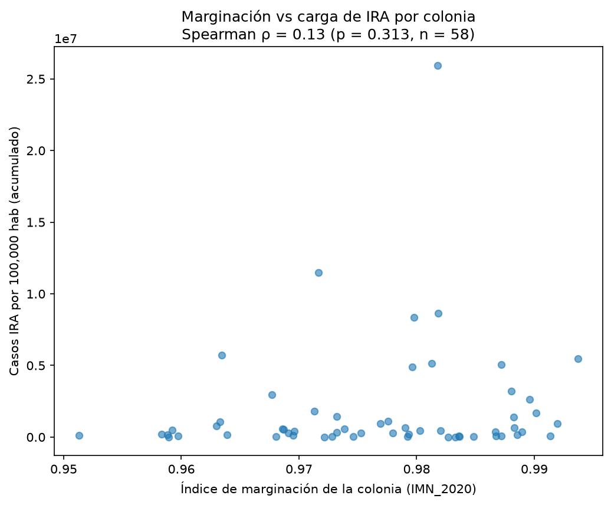

¿Cómo inciden el calor, el frío, la sequía y la calidad del aire en las enfermedades respiratorias en Hermosillo?
PREGUNTA ESPECÍFICA
¿Las zonas más marginadas de Hermosillo son las más afectadas por esas condiciones ambientales?
LAS FUENTES
Siete fuentes llegaron a la ingesta
Fuente
Qué trae
Origen
Formato nativo
Filas
Temperatura SMN
Temperatura mensual por estación
CONAGUA / SMN
216 CSV
77,027
Open-Meteo
Temperatura y humedad diarias
Open-Meteo
JSON (API)
10,958
Sequía
Sequía por municipio y quincena
CONAGUA / SMN
Excel (XLSX)
10,368
Marginación
Índice por municipio, 2015 y 2020
CONAPO
2 Excel
144
Calidad del aire
PM2.5, PM10 y ozono cada hora
RUOA-UNAM, ERNO
72 CSV
52,608
Salud (IRA)
Casos por semana y unidad médica
Secretaría de Salud
CSV (manual)
1,732,444
Catálogo CLUES
Ubicación de las unidades médicas
Secretaría de Salud
Excel (XLSX)
103
CÓMO VALIDAMOS
Cada fila se revisa con un esquema pydantic
1 · Esquema
Define cómo debe verse una fila: columnas, tipos y rangos permitidos.
2 · Revisar
validate_dataframe pasa la tabla por el esquema, fila por fila.
3 · Resultado
Filas válidas y una lista de errores con el campo y el motivo.
Ejemplo de reglas: la humedad debe estar entre 0 y 100 %; la semana epidemiológica, entre 1 y 53; las coordenadas de una clínica, dentro de Sonora.
RESULTADO
Filas que pasaron la validación
Temperatura SMN
77,027 de 77,027 · 100 %
Open-Meteo
10,958 de 10,958 · 100 %
Sequía
10,368 de 10,368 · 100 %
Marginación
144 de 144 · 100 %
Calidad del aire
52,608 de 52,608 · 100 %
Salud (IRA)
1,732,444 de 1,732,444 · 100 %
Catálogo CLUES
86 de 103 · 83.5 %
Filas válidas
Filas rechazadas
1.8 M filas revisadas · 313 de 313 semanas en cada tabla procesada
DE LA INGESTA A HERMOSILLO
Miles de filas se vuelven 313 semanas
HALLAZGO
17 de 103 unidades médicas traían coordenadas erróneas del catálogo
86
unidades válidas
13
ubicadas en la Ciudad de México, aunque el catálogo dice Hermosillo
4
sin coordenadas en el catálogo
Son consultorios de farmacias: sin la validación, habrían entrado al mapa sin notarlo.
¿Por qué están mal? El error viene del catálogo maestro DGIS: las 16 Farmacias Similares fueron modificadas en lote el 07/07/2016 («actualización localidad y jurisdicción») y quedaron con las coordenadas del domicilio corporativo de la cadena en CDMX, aunque su domicilio declarado sí es de Hermosillo; a 4 nunca se les capturó la coordenada. Todas siguen en operación y suman ~35 mil casos de IRA. Es un problema nacional de la cadena: ~29 % de sus 4,292 unidades en el catálogo carecen de coordenadas.
Epílogo: las 17 se resolvieron a mano por su domicilio declarado: 15 urbanas entraron al análisis de marginación con punto en su colonia (13 por colonia CONAPO, 2 con ubicación verificada en mapa) y 2 resultaron ser sucursales de los poblados Miguel Alemán y Bahía de Kino, fuera del área urbana a propósito. Ver references/salud/nota_calidad_clues_coordenadas.md.
CONCLUSIÓN
Listos para procesar
6 de 7
Datos válidos
fuentes pasan su esquema pydantic al 100 %
313/313
Datos completos
semanas epidemiológicas de 2015–2020 en cada tabla procesada
17
Problema ubicado
unidades del catálogo CLUES sin coordenadas útiles
Ingeniería de Características — Proyecto EDA
El impacto de las condiciones ambientales en la salud respiratoria de los hermosillenses
Calor, frío, sequía, calidad del aire y marginación · Análisis exploratorio semanal 2015–2020
Ana Patricia Quiroz Reyes · Luis Hiram Hernández
Gutiérrez · Víctor Andree De La Torre Velázquez
Hermosillo vive extremos: veranos de más de 40 °C, sequías largas,
polvo en el aire y frentes fríos en invierno.
Cada semana se reportan miles de casos de infecciones respiratorias agudas
(IRA): gripe, faringitis, bronquitis.
Nuestra intuición era: el calor y el aire sucio enferman a la gente,
y las colonias más pobres deberían sufrir más.
PREGUNTA 1 ¿El calor, el frío, la sequía y la
calidad del aire influyen en los casos de IRA?
PREGUNTA 2 ¿Las colonias más marginadas son
las más afectadas?
2 / 12
Los datos
Seis fuentes públicas, 2015–2020
¿Qué medimos?
¿Quién lo publica?
¿Cada cuánto?
Casos de IRA
Secretaría de Salud / DGIS (SUIVE)
Semanal, por clínica
Clínicas y su ubicación (CLUES)
Secretaría de Salud / DGIS
Catálogo
Temperatura y humedad
SMN-CONAGUA y Open-Meteo
Diario / mensual
Sequía
Monitor de Sequía, CONAGUA
Quincenal
Calidad del aire (PM10, PM2.5, ozono)
RUOA-UNAM, estación ERNO
Cada hora
Marginación
CONAPO / INEGI
Censos 2015 y 2020
Cada fuente viene en un formato y un ritmo distinto. El primer reto fue
ponerlas a hablar el mismo idioma.
Fuentes descritas en references/fuentes.md
Fuentes descritas en references/fuentes.md
3 / 12
Cómo lo construimos
Del dato crudo al panel semanal
1FuentesLas 7 fuentes públicas: clima, sequía, aire, marginación, casos de IRA y clínicas.
→
2IngestaDescargamos cada fuente y revisamos cada fila antes de usarla.
→
3ProcesamientoLimpiamos, nos quedamos con Hermosillo y pasamos todo a semanas.
→
4Panel semanalUna sola tabla: 313 semanas × 62 variables.
Cada fuente llega con su propio formato y frecuencia (horas, días, quincenas, censos). Al final todas hablan el mismo idioma: una fila por semana.
Libretas 01_ingesta y 02_procesamiento
4 / 12
La unidad de análisis
¿Por qué por semana?
313
semanas analizadas
62
variables por semana
6
fuentes integradas
6
años (2015–2020)
Así llegan los casosSalud reporta por semana epidemiológica; no perdemos detalle.
Se ven los retrasosSi el frío enferma semanas después, por mes no se notaría.
Se ven eventos cortosOlas de calor, frentes fríos y días de polvo duran días, no meses.
También armamos un panel mensual (72 meses) como apoyo.
Panel semanal: panel_eda_semanal.parquet
Panel semanal: panel_eda_semanal.parquet
5 / 12
Antes de analizar
Revisamos la calidad de los datos
Datos faltantes: solo en la calidad del aire. La estación dejó de medir
a mediados de 2018 y el PM2.5 casi no tiene datos válidos, así que lo dejamos fuera.
Semanas raras: con cuatro métodos encontramos 7 semanas extremas.
Casi todas son eventos reales (polvo en 2017, sequía en 2018, pandemia en 2020).
No borramos ningún dato: las semanas raras cuentan la historia, no son errores.
Las semanas atípicas se agrupan en eventos reales y, sobre todo, en 2020.
Métodos: IQR, Z-score, Isolation Forest y LOF
Métodos: IQR, Z-score, Isolation Forest y LOF
6 / 12
Hallazgo
Los casos tienen temporada
Todos los años, los casos casi se triplican en invierno:
de ~1,900 a ~6,200 por semana.
Con solo saber el mes se explica el
79 % de los cambios en los casos.
El clima y el aire también tienen su temporada, pero cada uno en un mes distinto.
Casos en enero, temperatura en junio, ozono en abril, PM10 en noviembre.
7 / 12
Por qué engaña
La trampa del calendario
En verano se vende más helado y hay más quemaduras de sol.
¿El helado quema? No: los dos dependen del verano. Con el clima y los casos pasa igual.

Casos (azul) contra cada variable (naranja): cada una sube en su propio mes.
8 / 12
Resultado
Comparando enero con enero, la relación desaparece
A cada semana le restamos lo normal para su mes y medimos la relación con la
correlación de Spearman (de −1 a +1; cerca de 0 es “sin relación”).
Variable
Tal cual
Comparando con lo normal del mes
¿Qué quiere decir?
Temperatura
−0.78
−0.02
Era solo el calendario
Polvo (PM10)
+0.49
+0.12
Era solo el calendario
Ozono
+0.21
+0.12 sin 2016
Débil, depende de datos dudosos
Frío fuera de lo normal, 5 semanas antes
—
−0.15
La única que sobrevive
Ninguna señal apunta al calor extremo: la idea inicial no se confirma.
Anomalía: valor de la semana menos el promedio de su mes
9 / 12
Pregunta 2: vulnerabilidad
¿Las colonias marginadas enferman más?
De 103 clínicas, las 17 con coords erróneas del
catálogo se corrigieron a mano y 91 caen dentro de una colonia:
tenemos el 94 % de los casos para
63 de 657 colonias.
Ordenamos las colonias por marginación y por casos, y comparamos los dos órdenes.
No coinciden: ρ = 0.19, prácticamente cero y no significativa (p = 0.14).
Además, todos los grupos tienen la misma temporada (×2.9 y ×3.0 en invierno)
y ninguno reacciona peor al frío.

Casos asignados por ubicación de la clínica, no por domicilio del paciente
10 / 12
El hallazgo clave
La red de salud no llega a todos
Las 12 colonias más marginadas de Hermosillo no tienen ninguna clínica
que reporte casos.
No es que ahí no haya enfermos: es que no los vemos en los datos.
Donde más haría falta observar, no hay observatorio. Esa falta de acceso
ya es, en sí misma, una forma de vulnerabilidad.
Marginación por colonia (CONAPO 2020) y clínicas (puntos).
11 / 12
Conclusión
Lo que aprendimos y lo que sigue
PREGUNTA 1 El calendario explica casi todo; solo el
frío fuera de lo normal deja una señal débil semanas después. La planeación debe enfocarse en el invierno.
PREGUNTA 2 En las colonias que vemos, la marginación no cambia
el riesgo. Pero las 12 más marginadas no tienen clínica que reporte.
1Modelo con el fríoUsar el frío de 3 a 5 semanas antes.
2Un solo índiceTemperatura, humedad y PM10 juntas.
3Tablero de inviernoPronóstico estacional para las clínicas.
4Domicilio del pacientePara responder la pregunta 2.
Gracias.
FUENTES
Casos de IRA: Secretaría de Salud / DGIS, SINAIS (SUIVE) 2010–2020 ·
Temperatura: SMN-CONAGUA y Open-Meteo · Sequía: Monitor de Sequía, CONAGUA ·
Aire: RUOA-UNAM, estación ERNO · Marginación: CONAPO/INEGI · Clínicas: catálogo CLUES, DGIS